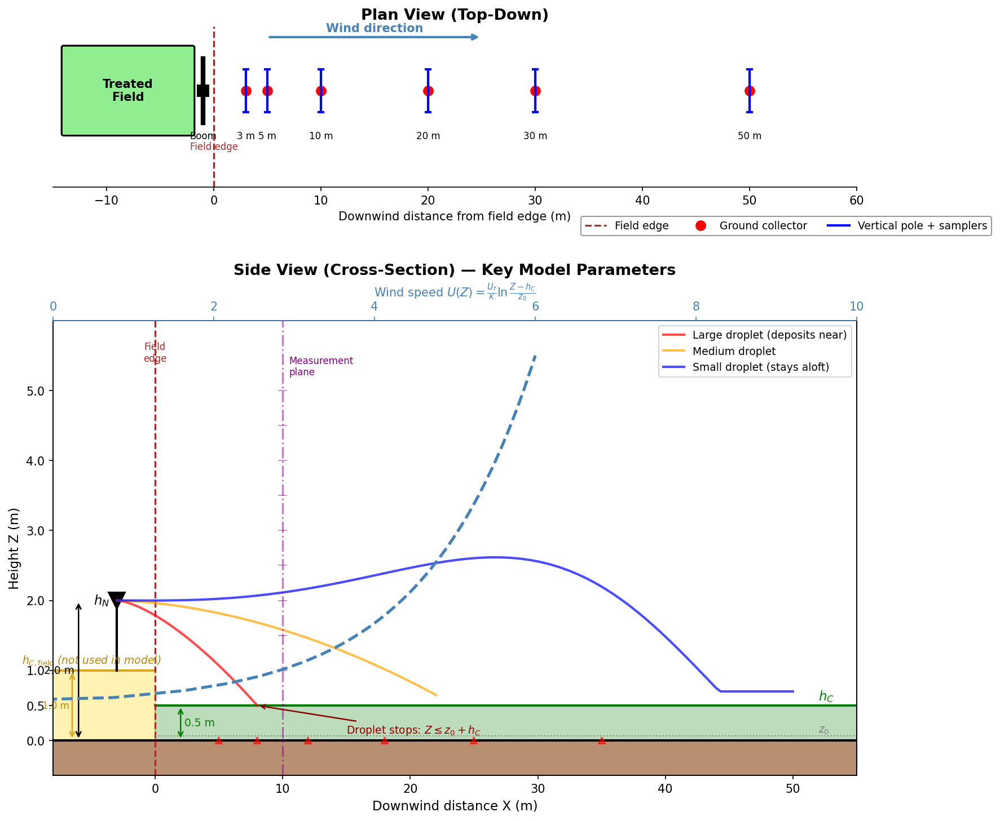

CDM Parameter Reference
Experiment Schematic

Generated by docs/generate_schematic.py. The treated field canopy (gold, \(h_{C,\text{field}}\)) is shown for context but is not used by the model. The model uses only the downwind receptor surface canopy height (green, \(h_C\)) for the wind profile, displacement height, and stopping condition.
What is Measured
| Collector type | Location | Measures | Model output |
|---|---|---|---|
| Ground (horizontal) | Surface, at distances 3–50 m | Mass deposited per unit area | Ground deposition (% IAR) |
| Vertical pole | Heights 0–5 m, at fixed distances | Mass passing through height band | Vertical drift profile (% IAR per height bin) |
State Variables (ODE System)
| Symbol | Code name | Units (ODE) | Definition |
|---|---|---|---|
| Z | x[0] |
cm | Droplet height above ground |
| X | x[1] |
cm | Droplet downwind distance from nozzle |
| V_z | x[2] / Vz |
cm/s | Droplet vertical velocity |
| V_x | x[3] / Vx |
cm/s | Droplet horizontal velocity |
| M_w | x[4] / Mw |
g | Mass of water remaining in droplet |
| V_vwx | x[5] / Vvwx |
cm/s | Local horizontal wind velocity at droplet height |
Environmental / Input Parameters
| Symbol | Code name | Units (input) | Units (ODE) | Definition |
|---|---|---|---|---|
| z₀ | z0 |
m | cm | Roughness length (friction height), computed as z₀ = 0.00341 + 0.1245 · h_C |
| h_C | hC |
m | cm | Canopy height of the downwind receptor surface (not the treated crop); defines displacement height and stopping condition. Nozzle height h_N must be above h_C. |
| h_N | hN |
m | cm | Nozzle height above ground (adjusted by liquid sheet offset); always above h_C |
| U_f | Uf |
m/s | cm/s | Friction velocity — characterises surface shear stress; derived from wind measurements and z₀ |
| κ | constants::karman |
— | — | von Kármán constant (≈ 0.4); relates friction velocity to log-law wind profile |
| ψψψ | psipsipsi / pppcalc |
— | — | Atmospheric stability correction factor; derived from Richardson number or entered directly |
| ΔT_wb | dTwb |
°C | °C | Wet-bulb temperature depression — drives evaporation rate |
Fluid / Material Properties
| Symbol | Code name | Units | Definition |
|---|---|---|---|
| ρ_A | rhoA |
g/cm³ | Density of wet air |
| μ_A | muA |
g·cm⁻¹·s⁻¹ | Dynamic viscosity of wet air |
| ρ_W | rhoW |
g/cm³ | Density of pure water in the droplet |
| ρ_S | rhoS |
g/cm³ | Density of dissolved solids in the droplet |
| ρ_L | rhoL |
g/cm³ | Density of the sprayed solution |
Droplet Parameters
| Symbol | Code name | Units (input) | Units (ODE) | Definition |
|---|---|---|---|---|
| d_p | dp |
μm | cm | Droplet diameter |
| M_s | Ms0 |
g | g | Mass of dissolved solids in the droplet (constant during transport) |
| x_s0 | xs0 |
fraction | fraction | Mass fraction of total dissolved solids in spray solution |
| V_t | Vt |
— | cm/s | Terminal settling velocity of the droplet |
Dimensionless / Derived Quantities
| Symbol | Code name | Definition |
|---|---|---|
| C_D | CD(Re) |
Drag coefficient, function of Reynolds number |
| Re | — | Reynolds number: Re = ρ_A · D_D · |V_rel| / μ_A |
| δδδ | ddd |
Scale factor for maximum deposition time (controls ODE integration duration) |
Key Relationships
Wind profile (log-law)
U(Z) = (U_f / κ) · ln((Z - h_C) / z₀)Applied in the ODE as the derivative:
dVvwx/dt = Vz · (U_f / κ) / (Z - h_C)Initial wind velocity at nozzle height
Vvwx0 = (U_f / κ) · ln((h_N - h_C) / z₀)Stopping condition
Droplet deposits when:
Z ≤ z₀ + h_CUnit Conventions
- The model interface uses SI units (m, m/s, μm for droplet diameter)
- The ODE internally works in CGS units (cm, g, s)
- Conversions occur in
DropletTransportconstructor andoperator()